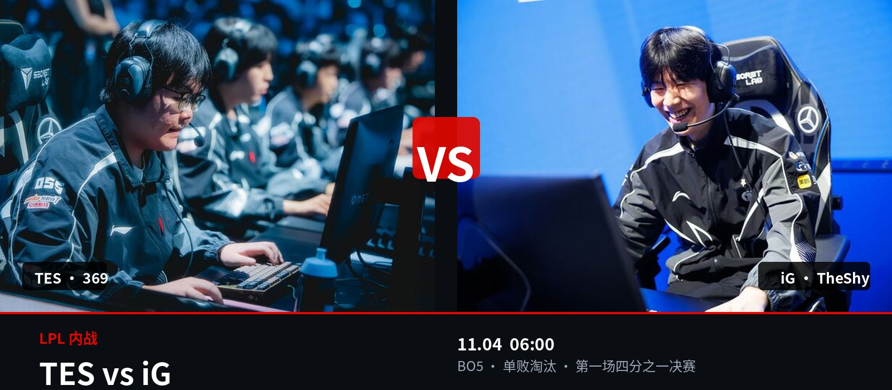
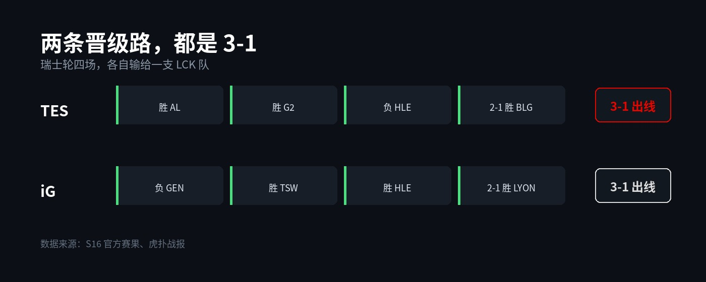

▲ 369 与 TheShy。图源：Liquipedia 选手资料图
S16 四分之一决赛 · LPL 内战
明天 6 点，LPL 内战：
TES 赌稳，iG 赌疯
BO5 单败淘汰，第一场四分之一决赛，输的人直接回家
北京时间 11 月 4 日早上 6 点，TES 和 iG 站上同一张地图。
这是 S16 淘汰赛的第一场，也是 LPL 唯一的内战。五局三胜，没有复活，没有下一轮。
LPL 这次有三支队伍进了八强：IG、TES、BLG。这一场，注定要走掉一个。
1
两条晋级路，都是 3-1

▲ 两队瑞士轮四场的结果
同样 3-1 出线，过程却两种味道。
TES 开局连赢 AL 和 G2 两支一号种子，气势很足。第三轮 0-1 输给 HLE，掉进 2-1 组，最后 2-1 逆转 BLG，把自己送进八强。
iG 正好相反。首轮 0-1 输给 GEN，被直接打下去，然后连赢三场：TSW、HLE、LYON，3-1 出线。
那场 1-0 赢 HLE，是 LPL 在本届 S16 第一次正面击败 LCK。iG 也因此成为 LPL 第一支锁定八强的队伍。
iG 隔了 2565 天重新回到世界赛八强。这个数字，本身就够写一篇稿子。
同样的战绩，两种性格：TES 是先手立威、中途翻车、最后自己爬回来；iG 是一头栽下去、然后一路赢回来。
2
上路，全场最贵的一条线
369 对 TheShy。这条线，基本决定了系列赛的走向。
369 是本届最意外的一张牌。开赛前被临时拉回来救火，结果在 2-1 组碰上 BLG，先丢一局再让一追二，决胜局剑魔一骑当千。状态是热的。
TheShy 是另一回事。S8 冠军上单，敢打、敢换、敢赌。这是他 2565 天后第一次打世界赛淘汰赛。
他的上限没人质疑。问题是波动——打得顺的时候能一个人撕开整条边路，打得不顺的时候，也会把资源一起赔进去。
iG 需要 TheShy 赢线，而且必须赢得足够大；TES 只需要 369 不崩。一个要赢，一个只要平。这个心理差，很致命。
3
阵容摆出来，答案清楚一半
| 位置 | TES | IG |
|---|---|---|
| 上单 | 369 | TheShy |
| 打野 | Tian | Wei |
| 中单 | Creme | Rookie |
| 下路 | JackeyLove / Zhuo | JiaQi / Meiko |
▲ 首发名单来源：S16 官方 11 月 4 日首发公告
这张表最值得看的，是 iG 那一列。
TheShy、Rookie、Meiko——三个世界冠军。BO5 该怎么打、落后两局怎么稳、赛点局怎么收，这套东西不用教，他们自己见过。
TES 那边，Tian 和 JackeyLove 也都拿过冠军，但整体更年轻一些，打得更冲。
下路是这场最直接的碰撞：Meiko 的经验对 JackeyLove 的火力。谁先在对线期拿到主动权，谁家打野就能多一条路可走。
4
两种赢法，谁容错更高
把两队的路摊开看：
iG 的赢法：TheShy 打出对线优势，Wei 顺着上路滚节奏，Rookie 和 Meiko 在中后期把团开起来。三步都得成立，缺一步就断。
TES 的赢法：Tian 前期带节奏，Creme 稳住中路，JackeyLove 后期接管。就算上路不占优，也能靠团战和后期翻回来。
一个是三条线都得赢，一个是允许有一条线不赢。
BO5 从来不是比谁的上限高，是比谁的漏洞少。这句话，对 iG 不太友好。
5
两种剧本，你押哪一种
剧本 A：iG 赢了。
四号种子掀翻三号种子，iG 在 2565 天后第一次回到八强就再往前一步，三个世界冠军继续走。这种结局，情怀拉满。
剧本 B：TES 赢了。
369 从救火队员变成四强上单，TES 带着更完整的阵容去碰下一轮。这个结局更"合理"，也更能打硬仗。
如果让我押，我押 TES，三比二。
但如果你问我更想看哪个——我想看 iG 赢。不是因为更强，是因为更少见。
6
6 点的闹钟
北京时间 11 月 4 日早上 6 点，第一场四分之一决赛。
对国内观众来说，这个时间不算友好。但八强赛第一场就是 LPL 内战，赢的人继续，输的人当晚回国。
定好闹钟。
这一场，值得早起。
评论区押注：
TES 还是 iG？比分你猜多少？
赛前说对的人，赛后回来认领。
点个关注。这几天的 S16 淘汰赛，每一场都跟。
资料来源：S16 官方赛果、11 月 4 日首发公告、虎扑战报、Liquipedia。文中对位与胜负判断为作者观点，非官方数据。